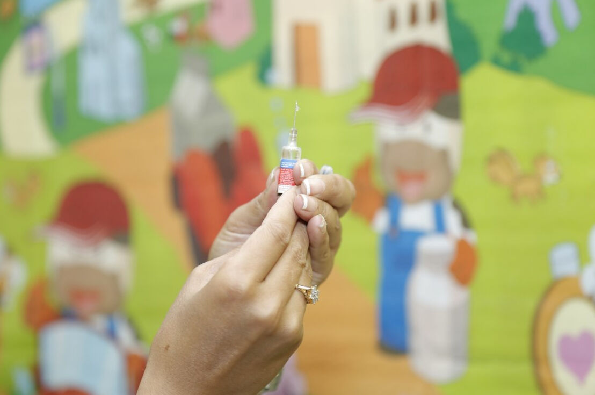

Trainees Edition
Trainers Edition
Trainees Edition
Trainers Edition
Module 5: The Psychology of Misinformation
Module Description
The main purpose of this Module is to present cognitive mechanisms which make people vulnerable to misinformation; which make misinformation persistent and difficult to correct and; which can be used to prevent the influence as well as the spread of misinformation
The secondary aim is to guide trainers who want to use the content of this Module to train their trainees.
With these aims in this Module, cognitive mechanisms which make people vulnerable to misinformation; which make misinformation persistent and; which can be used to prevent the influence of misinformation along with guidelines about how to teach the subject are covered.
Trainees who successfully complete this Module will be able to:
- demonstrate an understanding of the cognitive mechanisms which make people vulnerable to misinformation
- demonstrate an understanding of the cognitive mechanisms which make misinformation persistent and difficult to correct
- demonstrate an understanding of one’s cognitive mechanisms which which can be used to prevent the influence as well as the spread of misinformation
Additionally, trainers who successfully complete this Module, will be able to demonstrate an understanding of the guidelines for training on the subject.
Module Structure
This Module consists of the following parts:
- Module Description (objectives, description of the content and learning outcomes)
- Module Structure
- Guidelines for Trainees
- Guidelines for Trainers (how to get prepared, methods to use and tips for trainers)
- Content (study materials and exercises)
- Quiz
- Resources (references and recommended sources and videos)
Main objectives of the Module, description of the content and the learning outcomes are explained in the Module Description part. Content includes all study materials and the content related exercises. Quiz includes multiple choice questions for trainees to test their progress. Resources have two components: references and recommended resources for further study. References is the list of resources cited in the content part. Recommended sources consist of a list of supplemental sources and videos which are highly recommended to read and watch for learning more on the topic. Guidelines for Trainees includes instructions and suggestions for trainees. Guidelines for Trainers leads trainers through different phases of the training and provides tips which could be useful while teaching the subject.
Guidelines for Trainees
Trainees are expected to read the text, closely study examples, watch recommended videos and do the exercises. They can consult suggested sources for further information. After completing the study of the content trainees are strongly suggested to take the quiz to evaluate their progress. They can revise the study material when and if needed.
Guidelines for Trainers
Guidelines for trainers includes suggestions and tips for trainers about how to use the content of this Module to train people on the cognitive mechanisms which make people vulnerable to misinformation; which make misinformation persistent and difficult to correct and; which can be used to prevent the influence as well as the spread of misinformation.
Getting Prepared
Preparing a presentation (PowerPoint/Prezi/Canva) which is enriched with visual materials (images and video clips) and clear solid examples is strongly suggested. Choosing and presenting local examples (country specific) from the current or well known cases are also suggested. The more familiar and popular the examples are, the better the message will be communicated.
Getting Started
A short quiz (3 to 5 questions) in Kahoot or questions with Mentimeter can be used at the beginning for engaging participants in the topic. It can be used as a motivation tool as well as a tool to check trainees’ existing knowledge about the subject.
Methods to Use
Various teaching methods can be used in combination during the training. Such as:
- Lecturing
- Discussion
- Group work
- Self reflection
Tips for Trainers
Warming-up
An effective way of involving participants and setting common expectations about what they will learn is to ask a few preliminary questions on the subject. For instance you can ask trainees what they think about the role of psychological factors in the spread of misinformation, what makes people vulnerable to misinformation, why we fall for fake news, why misinformation is so hard to correct.
After the discussions, making sure that trainees are able to understand human psychology makes people vulnerable to misinformation.
Presenting the Objective of the Lesson
The objective of the lesson should be made clear (which is to inform about the cognitive mechanisms which make people vulnerable to misinformation; which make misinformation persistent and difficult to correct and; which can be used to prevent the influence as well as the spread of misinformation). Following the warming-up questions it will be easier to clarify the objectives.
Presenting the Lesson Content
While presenting the content make sure to interact with the trainees and encourage them for active participation.
- Before providing an overview of the cognitive factors which make people vulnerable to misinformation, ask participants to elaborate on it.
- Before providing an overview of the cognitive factors which make misinformation persistent and difficult to correct, ask participants to elaborate on it.
- When demonstrating examples, support them with evidence (preferably scientific research findings).
- After completing a comprehensive overview of the cognitive mechanisms related to misinformation receptivity ask participants whether cognitive mechanisms can be used to combat misinformation and elaborate on it.
Concluding
Make a short summary of the lesson and ask a couple of questions which underline the most important messages you planned to give.
- Ask trainees whether being aware of the cognitive factors which effect misinformation receptivity and persistence of misinformation helps them to take the control
After the discussions make sure that trainees understand that there are numerous cognitive mechanisms behind the spread of misinformation, however there are other cognitive mechanisms which can be used to fight against misinformation.
Content: The Psychology of Misinformation
Introduction
Today, on one hand, the media and the internet provide vast quantities of information and the sheer number of agents (such as propagandists, profiteers and trolls) are vying for control of our thoughts and feelings (WikiMedia UK, 2017), on the other hand, the onus is placed on the individual to sort fact from fiction. However, individuals have limited time, cognitive resources, or motivation to understand complex issues such as scientific findings or political developments, and misconceptions are commonplace. Moreover, once inaccurate beliefs are formed they are remarkably difficult to eradicate (Ecker, Lewandowsky, Swire, & Chang, 2011, p. 570). Even after people receive clear and credible corrections, misinformation continues to influence their reasoning. The ramifications can be serious. Belief in misinformation can adversely impact decision making, and has real-world implications in areas as disparate as education, health, and the economy (Swire-Thompson, & Ecker, 2018, p.2 in pre-print).
The psychology of misinformation is about the mental shortcuts, confusions, and illusions that encourage people to believe things that aren’t true. It is human psychology that makes people vulnerable to misinformation and affects whether corrections work or not (Shane, 2020c).
"Human brain illustrated with millions of small nerves" by Ars Electronica is licensed under CC BY-NC-ND 2.0
Cognitive Mechanisms Which Make People Vulnerable to Misinformation
Psychological theories and the underlying cognitive factors that make people vulnerable to misinformation are shortly introduced here. In order to be able to prevent their harmful effects, it is important to understand these factors and separate one from the other.
Cognitive Miserliness or Intellectual Laziness
Intellectual laziness, or so called cognitive miserliness is the tendency to think and solve problems in simpler ways and avoid spending sophisticated cognitive effort, regardless of intelligence (Cognitive miser, 2020). The term addresses the “psychological mechanisms that economise on the time and effort spent on information processing by simplifying social reality, which would otherwise overwhelm” people’s “cognitive capacities with its complexity” (Cognitive miser, 2021).
While cognitive miserliness helps people to use their brains efficiently, it also causes people not to put enough cognitive effort when it is needed, such as when thinking about whether something they see in the news is true (Shane, 2020c).
Satisficing
“Satisficing is selecting information that is ‘good enough’ to satisfy basic needs or choosing the first ‘acceptable answer’ to a question or solution to a problem” (Cooke, 2018). It is one form of bounded rationality, and leads people not to use all of their cognitive resources to obtain optimal outcomes, but instead use just enough to provide a sufficiently optimal outcome for the context (Metzger & Flanagin, 2013, p. 213).
“Satisficing could be a result of several factors such as intellectual laziness; unwillingness or being unable to deal with information overload; not having the requisite information evaluation skills. Whatever the reason, it contributes to the spread of mis/dis-information by allowing low-quality information to remain in circulation and be disseminated” (Cooke, 2018).
Dual Process Theory
The dual process theory of thought claims that two different systems of thought co-exist, namely fast thinking and slow thinking. Broadly speaking, fast thinking is a quick, automatic, effortless, associative, and affective-based form of reasoning. On the contrary, slow thinking is a thoughtful, and deliberative process which requires effort and the use of cognitive resources, and is based on symbolic and abstract rule manipulation (Gronchi & Giovannelli, 2018).
Because of their tendency towards cognitive miserliness, people generally use fast, automatic processing which creates the risk of misinformation for two reasons. First, the easier something is to process, the more likely it is considered true. Quick and easy judgments often feel right even when they aren’t. Second, its efficiency can miss details which sometimes could be crucial. For example, one might recall something he/she read on the internet, but forget that it was debunked (Shane, 2020c).

"The Thinker" by Dano is licensed under CC BY 2.0
Heuristics
Heuristic is mental shortcuts that ease the cognitive load of making a decision (Heuristic, 2021). Heuristic allows people to solve problems and make judgments quickly and efficiently (Cherry, 2021). Research proves that heuristics have an important function in helping people cope effectively with the vast quantities of information and decisions they encounter every day (Metzger & Flanagin, 2013, p. 214).
While heuristics are helpful to speed up the problem solving and the decision-making process, they can introduce errors. They can lead to cognitive biases, inaccurate judgments and incorrect conclusions. Relying on an existing heuristic can also make it difficult to see alternative solutions or come up with new ideas. Heuristics also contribute to stereotypes and prejudice (Cherry, 2021).
Cognitive Dissonance
Cognitive dissonance describes a person’s mental discomfort that is triggered by a situation in which he/she is confronted with facts that contradict his or her beliefs, ideas, and values. Theory of Cognitive Dissonance assumes that people strive for inner psychological consistency. Thus when dissonance is present, they try to reduce it and achieve consonance. Additionally, they actively avoid situations and information which would likely increase the dissonance (Taddicken & Wolff, 2020, p. 207). Cognitive dissonance can lead people to reject credible information to reduce the dissonance (Shane, 2020c).
"Dissonance" by hernanpba is licensed under CC BY-SA 2.0
Confirmation Bias
Confirmation bias, one of the many cognitive biases which can be seen as a problematic aspect of human reasoning, connotes the seeking or interpreting of evidence in ways that are partial to existing beliefs and expectations (Nickerson, 1998, p.175). In other words, it is the tendency to seek and believe information that already confirms one’s existing mental models, prior knowledge, and beliefs, as opposed to seeking information from a variety of potentially conflicting sources (Cooke, 2018).
Disinformation actors can exploit this tendency to amplify existing beliefs (Shane, 2020c). A great deal of empirical evidence supports the idea that confirmation bias is extensive, strong and appears in many guises. The evidence also supports the view that once a person has taken a position on an issue, his/her primary purpose becomes that of defending or justifying that position. This is to say that regardless of whether one's treatment of evidence was evenhanded before the stand was taken, it can become highly biassed afterward (Nickerson, 1998, p.177).
Motivated Reasoning
Motivated reasoning is a form of reasoning in which people access, construct, and evaluate arguments in a biassed fashion to arrive at a preferred conclusion. People use reasoning strategies that allow them to draw the conclusions they want to draw (Motivated Reasoning, n.d.). In other words, people use their reasoning skills to believe what they want to believe, rather than determine the truth. The crucial point here is the idea that people’s rational faculties, rather than lazy or irrational thinking, can cause misinformed belief (Shane, 2020c).
Fluency
Fluency refers to how easily information is processed by people. “Repeated exposure to a statement increases the subjective ease with which that statement is processed. This increased processing fluency, in turn, increases the probability that the statement is judged to be true” (Reber & Unkelbach, 2010, p. 563). In other words, people are more likely to believe something to be true if they can process it fluently (Shane, 2020c).
One of the determinants of processing fluency is repetition. “When people hear or see a statement repeatedly, they believe that this statement is more likely to be true than new statements which they have never encountered before” (Reber & Unkelbach, 2010, p. 564). Things heard before are processed more easily, and therefore are more likely believed. Repetition increases the effect. So even if something is debunked, the sheer repetition of the original claim can make it more familiar, fluent, and believable (Shane, 2020c).
Selective Exposure and Selective Avoidance
The terms “selective exposure” and “selective avoidance” “are used to describe the behavior in which a person actively seeks for information that supports his/her views and avoids information that challenges him/her. In social media, selective avoidance can be easily performed by removing or hiding unwanted content/people (Malinen, Koivula, Keipi & Koiranen, 2018, p. 351) while selective exposure can be performed by filtering. The selective exposure that humans tend toward is also done for them automatically by the algorithmic filtering (Wardle & Derakhshan, 2017, p. 47).
"I Can't See You..." by tropical.pete is licensed under CC BY-SA 2.0
There are numerous explanations about why selective exposure occurs. Stroud (2017, p. 3-4) indicates in her overview that cognitive dissonance, motivated reasoning, confirmation bias, fluency and cognitive miserliness are among the mechanisms which operate in concert or different explanations may account for selective exposure in different circumstances.
Pluralistic Ignorance vs False Consensus Effect
Pluralistic ignorance is a lack of understanding about what others in society think and believe. There is a divergence between the actual prevalence of a belief in a society and what people in that society think others believe (Lewandowsky, Ecker, Seifers, Schwarz & Cook, 2012, p. 113).This can make people incorrectly think others are in a majority when it comes to a political view, when it is in fact a view held by very few people. This can be made worse by rebuttals of misinformation (e.g., conspiracy theories), as they can make those views seem more popular than they really are (Shane, 2020c).
The false consensus effect is the flip side of pluralistic ignorance (Lewandowsky, Ecker, Seifers, Schwarz & Cook, 2012, p. 113). In this case, people overestimate how many other people share their views (Shane, 2020c).
Example: The Extent of Pluralistic Ignorance can be Quite Striking
Findings of a research indicated that respondents overestimated community support for their views with respect to Indigenous Australians and respondents in the more negative categories were significantly less accurate in their estimates than those in the more positive categories (Pedersen, Griffiths, & Watt, 2008). Specifically, although only 1.8% of people in a sample of Australians were found to hold strongly negative attitudes toward Aboriginals, those few individuals thought that 69% of all Australians (and 79% of their friends) shared their fringe beliefs (Pedersen, Griffiths, & Watt, 2008; Lewandowsky, Ecker, Seifers, Schwarz & Cook, 2012).
"Indigenous Australian Aboriginal Dancers" by NAPARAZZI is licensed under CC BY-SA 2.0
Third-person Effect
The third-person effect describes individuals who perceive media messages to have greater effects (influence) on other people than on themselves (Salwen & Dupagne, 1999, p. 523). Research findings indicate that people rate themselves as better at identifying misinformation than others. This means people can underestimate their vulnerability, and don’t take appropriate actions (Stefanita, Corbu & Buturoiu, 2018, p. 6; Shane, 2020c).
Pseudo-profound Bullshit Receptivity
Bullshit receptivity is about how receptive people are to information that has little interest in the truth (a meaningless cliche, for example) (Shane, 2020c). “Pseudo-profound bullshit describes statements that can appear to be deep but have no real meaning” (Dolan, 2019). It is different from a lie, which intentionally contradicts the truth. Research findings show that analytic thinking makes people less susceptible to fake news and people who are more receptive to bullshit are more susceptible to fake news (Pennycook & Rand, 2020).
Example of Pseudo-profound Bullshit Sentence
“We are in the midst of a high-frequency blossoming of interconnectedness that will give us access to the quantum soup itself” (Dolan, 2019)
Cognitive Mechanisms Which Make Misinformation Persistent and Difficult to Correct
Misinformation can lead to poor decisions about consequential matters and is persistent and difficult to correct. Debunking misinformation is an important scientific and public-policy goal, however the process of correcting misinformation is complex and remains incompletely understood (Chan, Jones, Jamieson, & Albarracín, 2017, p. 1531).
When people are exposed to misinformation, it’s difficult to get it out of their minds (Shane, 2020b). Research findings indicate that persistence is stronger and the debunking effect is weaker especially when audiences generated reasons in support of the initial misinformation (Chan, Jones, Jamieson, & Albarracín, 2017, p. 1531).
Examples
Example 1: Widely Believed Misperceptions About Zika Virus Outbreak in Brazil
Disease epidemics and outbreaks often generate conspiracy theories and misperceptions that mislead people about the risks they face and how best to protect themselves. The rumor that genetically modified mosquitoes caused the Zika virus outbreak in Brazil is misinformation, a claim unsupported by scientific evidence (Schipani, 2016). However, findings of a research showed that conspiracy theories and other misperceptions about Zika were widely believed and corrective information on Zika did not change people’s minds about false claims (Carey, Chi, Flynn, Nyhan & Zeitzoff, 2020, p. 1).
"Mosquito That Causes Malaria" by NIAID is licensed under CC BY 2.0
Example 2: Some People are Convinced of the Unfounded Claim About the Link Between Autism and the Childhood Vaccines
In the United Kingdom, a 1998 study suggesting a link between a common childhood vaccine and autism generated considerable fear in the general public concerning the safety of the vaccine. The UK Department of Health and several other health organisations immediately pointed to the lack of evidence for such claims and urged parents not to reject the vaccine. The media subsequently widely reported that none of the original claims had been substantiated. Nonetheless, in 2002, between 20% and 25% of the public continued to believe in the vaccine-autism link, and a further 39% to 53% continued to believe there was equal evidence on both sides of the debate (Lewandowsky, Ecker, Seifers, Schwarz & Cook, 2012). Despite the debunking efforts, the myth has led to a drop in vaccination rates, and an increase in vaccine-preventable disease not only in UK but also elsewhere (Swire-Thompson, & Ecker, 2018; Newport, 2015; Chan, Jones, Jamieson, & Albarracín, 2017; Larson, Cooper, Eskola, Katz & Ratzan, 2011).

"IPV vaccination" by Sanofi Pasteur is licensed under CC BY-NC-ND 2.0
Example 3: More than a Quarter of the Public have Doubts About Obama's Citizenship
A group known as “birthers” claimed Barack Obama, the 44th president of the United States, had been born outside the United States (some say in his father's homeland of Kenya) and was therefore constitutionally ineligible to serve as president. Although incontrovertible evidence, such as a copy of the president's birth certificate and birth announcements in local papers, were released, polls at the time showed that these claims were widely believed by a sizable proportion of the public and more than a quarter of the public have doubts about Obama's citizenship (Travis, 2010; Lewandowsky, Ecker, Seifers, Schwarz & Cook, 2012).
The Continued Influence Effect
Misinformation continues to influence people even after it has been corrected. It is, in a way, the failure of corrections (Shane, 2020b). Studies have documented the pervasive effects of misinformation by showing that “it is extremely difficult to return the beliefs of people who have been exposed to misinformation to a baseline similar to those of people who were never exposed to it” (Lewandowsky, Ecker, Seifers, Schwarz & Cook, 2012, p.114). Corrections often fail because the misinformation, even when explained in the context of a debunk, can later be recalled as a fact. Which means people recall information, but forget that it was corrected (Shane, 2020b).
Mental Models
A mental model is a framework for understanding something that has happened (Shane, 2020b). “Research on mental models suggests that an effective debunking message should be sufficiently detailed to allow recipients to abandon initial information for a new model. Messages that simply label the initial information as incorrect may therefore leave recipients unable to remember what was wrong and offer them no new model to understand the information” (Chan, Jones, Jamieson, & Albarracín, 2017, p. 1532). Offering a well argued, detailed debunking message appears to be necessary to reduce misinformation persistence by allowing to create a new mental model (Chan, Jones, Jamieson, & Albarracín, 2017, p. 1532).
The Implied Truth Effect
The implied truth effect is when something seems true because it hasn’t been corrected (Shane, 2020b). When attempting to fight misinformation using warnings, it is necessary for some third party (such as fact-checkers) to examine information and either verify or dispute it. However, the impossibility of fact-checking all (or even most) headlines, poses an important challenge. As a result only a fraction of all misinformation is successfully tagged with warnings. The absence of a warning has two meanings: either the headline in question has not yet been checked, or it has been verified. Research indicates that people draw the latter inference, thus, tagging some false news headlines has the unintended side-effect of causing untagged headlines to be viewed as more accurate (Pennycook, Bear, Collins & Rand, in press). Evidence proved that the implied truth effect exists when misinformation is labeled on some social media posts but not others (Shane, 2020b).
Tainted Truth Effect
The tainted truth effect is where corrections make people start to doubt other, true information. The risk is that corrections and warnings create generalised distrust of what people read from the media (Shane, 2020b). Research findings prove that retrospective, invalid misinformation warnings taint news and lead individuals to view the news as less credible. Increased scepticism produced by invalid misinformation warnings leads individuals to discard information that was in fact accurate (Freeze, Baumgartner, Bruno, Gunderson, Olin, Ross & Szafran, 2020).
Repetition
Repetition causes familiarity and familiarity is another powerful persuasive factor which leads to acceptance (Paul & Matthews, 2016, p.4). Repetition is an effective technique for getting people to accept misinformation. The more often an opinion has been encountered in the past, the more accessible it is in memory and the more familiar it seems when it is encountered again (Weaver, Garcia, Schwarz & Miller, 2007, p. 821). Stray claims that, receiving a message via multiple modes and from multiple sources increases the message’s perceived credibility, especially if the disseminating source is someone already known by the receiver (such as friends and family) (Stray, 2017; Wardle & Derakhshan, 2017, p. 46).
"Beach Repetition" by Vincent_AF is licensed under CC BY-SA 2.0
There is evidence that repetition of the same opinion also leads people to the false conclusion that the opinion is widely shared, even if all the repetitions come from the same single communicator (Weaver, Garcia, Schwarz & Miller, 2007, p. 822). Cues like ‘endorsement’ have a powerful influence on people’s credibility judgments which is particularly problematic on social media due to techniques (like bots that automatically “like” or “share” stories) which can create false sense of popularity about content (Wardle & Derakhshan, 2017, p. 46).
Illusory Truth Effect
The illusory truth effect occurs when familiarity (fluency via prior exposure) makes something seem true when it isn’t (Shane, 2020b). Evidence shows that even a single exposure increases subsequent perceptions of accuracy. Moreover, this “illusory truth effect” for fake news headlines occurs despite a low level of overall believability, and even when the stories are labelled as contested by fact-checkers or are inconsistent with the reader’s world views (Pennycook, Cannon & Rand, 2018).
The Backfire Effect
The backfire effect is the theory that a correction can strengthen belief in misinformation (Shane, 2020b). The idea behind is that, when a claim aligns with someone’s beliefs, telling them that it’s wrong will actually make them believe it even more strongly (Sippit, 2019). It is the most contested psychological concept in misinformation (Shane, 2020b). Because it suggests that fact-checks are ineffective, or even counterproductive. There is a debate in the literature as to whether backfire effects exist at all. Studies in relevant literature indicate that the backfire effect is in fact rare and fact-checking does help inform people (Sippit, 2019).
The concept has been broken down into the overkill backfire effect, worldview backfire effect, and familiarity backfire effect: The overkill backfire effect is when misinformation is more believable than overly complicated correction This leads the correction to backfire and increase belief in the misinformation (Shane, 2020b). The worldview backfire effect is said to occur when people are motivated to defend their worldview because a correction challenges their belief system. So the person rejects the correction because it is incompatible with their worldview, and in doing so strengthens their original belief (Swire-Thompson, DeGutis & Lazer, 2020; Shane, 2020b). In contrast to the mechanisms of the worldview backfire effect, the familiarity backfire effect is presumed to occur when misinformation is repeated within the correction (Swire-Thompson, DeGutis & Lazer, 2020). The familiarity backfire effect describes the fact that corrections, by repeating falsehoods, make them more familiar and therefore more believable (Shane, 2020b).
How to Use Cognitive Mechanisms to Prevent the Influence and the Spread of Misinformation
The psychological concepts that are relevant to the prevention of misinformation and building mental resilience are addressed in this section.
Scepticism
Scepticism is the awareness of the potential for manipulation (hidden agendas) and a desire to accurately understand the truth (Shane, 2020a). Scepticism can reduce misinformation effects, as it involves more cognitive resources going into the evaluation of information (weighing up the veracity of both the misinformation and the correction). “The ability to maintain doubt, question evidence and scrutinise the original data -even when it aligns with one’s worldview- is conducive to avoiding reliance on misinformation, but it is a difficult task”(Swire-Thompson, & Ecker, 2018).
Alertness
Alertness is a heightened awareness of the effects of misinformation (Shane, 2020a). Research results “suggests that inducing alertness (for instance through warning people about the effects of misinformation, such as the continued influence effect) might be another effective way of reducing reliance on misinformation but that its effectiveness may be limited (Ecker, Lewandowsky & Tang, 2010, p. 1094).
Analytic Thinking
“Analytic thinking, also known as deliberation, is a cognitive process that involves thoughtful evaluation (reasoning) rather than quick, intuitive judgements” (Shane, 2020a). Misinformation researchers found that analytic thinking helps to uncover the truth in the context of news headlines (Bago, Rand & Pennycook, 2020, p.2; Shane, 2020a).
Friction
Friction is the opposite of fluency, when something is difficult to process or perform (Shane, 2020a). Research results indicate that adding “friction” (i.e., pausing to think) before sharing can improve the quality of information shared on social media and reduce dissemination of misinformation (Fazio, 2020, p.1). If friction is introduced in the act of sharing, in other words if people are encouraged to pause and consider the accuracy and quality of what they are posting, they’re less likely to spread misinformation (Fazio, 2020, p.2).
Inoculation
Given the difficulties associated with correcting misinformation once it has been processed, an alternative approach is to neutralise potential misinformation before it is encoded, a technique called inoculation or as colloquially known “prebunking” (Cook, Lewandowsky & Ecker, 2017, p. 4).
Inoculation “refers to techniques that build preemptive resistance to misinformation. Like a vaccine, it works by exposing people to examples of misinformation, or misinformation techniques, to help them recognize and reject them in the future” (Shane, 2020a). Inoculation has been found to be effective in reducing belief in conspiracy theories and increasing belief in scientific findings and consensus (Cook, Lewandowsky & Ecker, 2017, p.4).
Nudges
Nudges are small prompts that subtly suggest behaviours. The concept emerged from behavioural science (Shane, 2020a). When it comes to building resilience to misinformation, nudges generally try to prompt analytic thinking. A recent study found that nudging people to think about accuracy before sharing misinformation significantly improves people’s discernment of whether it is true (Pennycook, McPhetres, Zhang, Lu, & Rand, 2020).
Exercise
Match the following concepts with their definitions.
Quiz
References
Bago, B., Rand, D. G., & Pennycook, G. (2020). Fake news, fast and slow: Deliberation reduces belief in false (but not true) news headlines. Journal of Experimental Psychology: General.
Carey, J.M., Chi, V., Flynn, D.J., Nyhan, B. & Zeitzoff, T. (2020). The effects of corrective information about disease epidemics and outbreaks: Evidence from Zika and yellow fever in Brazil. Science Advances, 6(5), eaaw7449. DOI: 10.1126/sciadv.aaw7449.
Chan, M. S., Jones, C. R., Jamieson, K. H. & Albarracín, D. (2017). Debunking: A meta-analysis of the psychological efficacy of messages countering misinformation. Psychological Science, 28(11), 1531–1546.
Cherry, K. (2021). Heuristics and cognitive biases. Verywellmind.
Cognitive miser (2020). Wikipedia.
Cognitive miser (2021). Oxford Reference. Oxford University Press.
Cook, J., Lewandowsky, S. & Ecker, U.K.H. (2017). Neutralizing misinformation through inoculation: Exposing misleading argumentation techniques reduces their influence. PLOS ONE, 12(5), e0175799.
Cooke, N. (2018). Fake news and alternative facts: Information literacy in a post-truth era. ALA.
Dolan, E. W. (2019). Swedish study: Bullshit receptivity is robustly linked to social conservatism — and support for the Green Party. PsyPost.
Ecker, U., Lewandowsky, S., Swire, B., & Chang, D. (2011). Correcting false information in memory: Manipulating the strength of misinformation encoding and its retraction. Psychonomic Bulletin & Review, 18, 570–578.
Ecker, U., Lewandowsky, S., & Tang, D. T. W. (2010). Explicit warnings reduce but do not eliminate the continued influence of misinformation. Memory and Cognition, 38(8), 1087-1100.
Fazio, L. (2020). Pausing to consider why a headline is true or false can help reduce the sharing of false news. Harvard Kennedy School Misinformation Review. 10.37016/mr-2020-009.
Freeze, M., Baumgartner, M., Bruno, P., Gunderson, J., Olin, J., Ross, M. & Szafran, J. (2020). Fake claims of fake news: Political misinformation, warnings, and the tainted truth effect. Political Behavior. 10.1007/s11109-020-09597-3.
Gronchi, G. & Giovannelli, F. (2018). Dual process theory of thought and default mode network: A possible neural foundation of fast thinking. Frontiers in Psychology, 9, 1237. doi: 10.3389/fpsyg.2018.01237.
Heuristic (2021). Wikipedia.
Larson, H. J., Cooper, L. Z., Eskola, J., Katz, S. L., & Ratzan, S. C. (2011). Addressing the vaccine confidence gap. The Lancet, 378, 526–535.
Lewandowsky, S., Ecker, U.K.H., Seifers, C. M., Schwarz, N. & Cook, J. (2012). Misinformation and its correction: Continued influence and successful debiasing. Psychological Science in the Public Interest, 13 (3), 106–131.
Malinen, S., Koivula, A., Keipi, T. & Koiranen, I. (2018). Exploring selective exposure and selective avoidance behavior in social media. SMSociety '18, July 18–20, 2018, Copenhagen, Denmark.
Metzger, M. J. & Flanagin, A. J. (2013). Credibility and trust of information in online environments: The use of cognitive heuristics. Journal of Pragmatics, 59, 210-220.
Motivated Reasoning. (n.d.). Psychology Research and Reference.
Newport, F. (2013). Americans still think Iraq had weapons of mass destruction before the war. Gallup News Service.
Newport, F. (2015). In U.S., percentage saying vaccines are vital dips slightly.
Nickerson, R. (1998). Confirmation bias: A ubiquitous phenomenon in many guises. Review of General Psychology, 2(2), 175–220.
Paul, C. & Matthews, M. (2016). The Russian “firehose of falsehood” propaganda model: Why it might work and options to counter it.
Pedersen, A., Griffiths, B., & Watt, S. E. (2008). Attitudes toward out-groups and the perception of consensus: All feet do not wear one shoe. Journal of Community & Applied Social Psychology, 18(6), 543–557.
Pennycook, G., Bear, A., Collins, E. T. & Rand, D. G. (in press). The implied truth effect: Attaching warnings to a subset of fake news headlines increases perceived accuracy of headlines without warning. Management Science.
Pennycook, G., Cannon, T. D., & Rand, D. G. (2018). Prior exposure increases perceived accuracy of fake news. Journal of Experimental Psychology: General, 147(12), 1865-1880. DOI: 10.1037/xge0000465.
Pennycook, G., McPhetres, J., Zhang, Y., Lu, J. G. & Rand, D. G. (2020). Fighting COVID-19 misinformation on social media: Experimental evidence for a scalable accuracy nudge intervention. Psychological Science, 31(7) 770–780
Pennycook, G. & Rand, D. (2020). Who falls for fake news? The roles of bullshit receptivity, overclaiming, familiarity, and analytic thinking”. Journal of Personality, 88, 185-200.
Reber, R. & Unkelbach, C. (2010). The Epistemic status of processing fluency as source for judgments of truth”. Review of Philosophy and Psychology, 1 (4), 563–581.
Salwen, M.B. & Dupagne, M. (1999). The third-person effect: Perceptions of the media’s influence and immoral consequences. Communication Research, 26(5), 523-549.
Schipani, V. (2016). GMOs didn’t cause the Zika outbreak.
Shane, T. (2020a). The psychology of misinformation: How to prevent it. First Draft.
Shane, T. (2020b). The psychology of misinformation: Why it’s so hard to correct. First Draft.
Shane, T. (2020c). The psychology of misinformation: Why we’re vulnerable. First Draft.
Sippit, A. (2019). The backfire https://fullfact.org/blog/2019/mar/does-backfire-effect-exist/ effect: Does it exist? And does it matter for factcheckers? Full Fact.
Stefanita, O., Corbu, N. & Buturoiu, R. (2018). Fake news and the third-person effect: They are more influenced than me and you. Journal of Media Research, 11( 3), 5-23.
Stray, J. (Feb 27, 2017), Defense Against the Dark Arts: Networked Propaganda and Counter-Propaganda, Tow Center for Digital Journalism, Medium.
Stroud, N. J. (2017). Selective exposure theories. In: K. Kenski & K. H. Jamieson (Eds.). The Oxford Handbook of Political Communication.
Swire-Thompson, B. & DeGutis, J. & Lazer, D. (2020). Searching for the Backfire Effect: Measurement and Design Considerations. Journal of Applied Research in Memory and Cognition. 9. 10.1016/j.jarmac.2020.06.006.
Swire-Thompson, B. & Ecker, U. (2018). Misinformation and its correction: Cognitive mechanisms and recommendations for mass communication. In B. G. Southwell, E. A. Thorson & L. Sheble (Eds.) Misinformation and Mass Audiences. University of Texas Press.
Taddicken, M. & Wolff, L. (2020). Fake news’ in science communication: Emotions and strategies of coping with dissonance online. Media and Communication, 8 (1), 206–217.
Travis, S. (2010). CNN poll: Quarter doubt Obama was born in U.S.
Wardle, C. & Derakhshan (2017). Information disorder: Toward an interdisciplinary framework for research and policymaking. The Council of Europe.
Weaver, K., Garcia, S. M., Schwarz, N. & Miller, D. T. (2007). Inferring the popularity of an opinion from its familiarity: A repetitive voice can sound like a chorus. Journal of Personality and Social Psychology, 92 (5), 821–833.
WikiMedia UK (2017). Evidence provided to the UK parliamentary inquiry on fake news.
Recommended Sources
Shane, T. (2020a). The psychology of misinformation: How to prevent it. First Draft.
Shane, T. (2020b). The psychology of misinformation: Why it’s so hard to correct. First Draft.
Shane, T. (2020c). The psychology of misinformation: Why we’re vulnerable. First Draft.
Recommended Videos
Shane, T. (2020). The psychology of misinformation: Webinar.